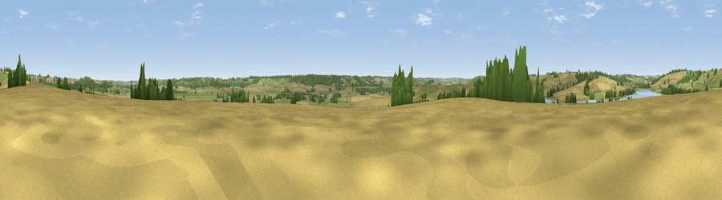

Viewpoint near Caldecott
#31068 in England · top 33% of its area beats it · near CaldecottThe view, rendered

A 360° render of this exact spot computed from the terrain model, tree cover and land cover — summer colours, afternoon light, calibrated against photographs of famous viewpoints. Real trees, hedges and buildings will differ in detail.
The panorama
Grey silhouette: terrain skyline in each direction (720 bearings, Earth curvature and refraction included). Dashed green: skyline with trees (+15 m) and buildings (+8 m) as obstacles. Blue strip: how far the ground is visible on each bearing.
Where the view opens
Wedge length = distance to the farthest visible ground on that bearing (vegetation-aware). Rings at 10, 25 and 50 km.
What fills the view
47% cropland · 38% grassland · 12% woodland · 2% water ·
Angular shares of the visible panorama (visual magnitude), not map area. Landscape diversity 0.47 (0–1 Shannon).
Key numbers
More beautiful places nearby
The staircase of upgrades: each row has a higher view potential than everything closer. Driving times are estimates from straight-line distance, calibrated against real road routing — check an actual route before setting out.
| Place | Direction | Drive | Score |
|---|---|---|---|
| Viewpoint near Stoke Dry | N · 1 km | ~4 min | 47.5 |
| Viewpoint near Rockingham | SSE · 3 km | ~8 min | 48.7 |
| Viewpoint near East Norton | WNW · 10 km | ~19 min | 53.2 |
| Robin-a-Tiptoe Hill | NW · 13 km | ~24 min | 54.6 |
| Whatborough Hill | NW · 14 km | ~26 min | 57.1 |
| Viewpoint near Cold Newton | NW · 18 km | ~31 min | 57.3 |
| Viewpoint near Burrough on the Hill | NNW · 20 km | ~34 min | 66.0 |
| Viewpoint near Stathern | NNW · 37 km | ~56 min | 66.3 |
52.54538, -0.73215 · source: screening · position refined by local search. Computed location — check access rights before visiting.